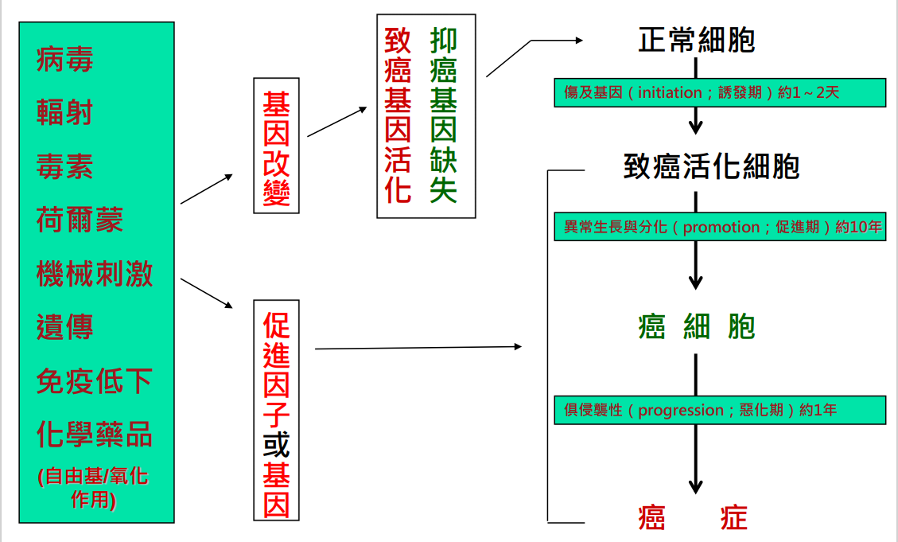

返回上一頁
惡性腫瘤(癌症)
❆介紹
-
腫瘤(Neoplasm) :
包含良性與惡性，涵義上強調基因變異造成細胞過度增生。
-
良性腫瘤(Benign Tumor ) :
相對無害，生長於局部，不易散布，病人易存活。
-
惡性腫瘤(Malignant Tumor) :
可有侵襲、破壞、轉移等行為，甚至造成 病人死亡，俗稱癌(Cancer )。
-
癌症生成過程 (基因變異)

❆治療
- 手術切除
- 雷射治療
- 放射線治療 :
高能游離輻射破壞細胞染色體，使細胞停止生長，從而消滅癌細胞；由於正常細胞修復能力較好，
相對於癌細胞較不易受高能輻射所影響(目前最常使用的放射治療儀器為直線加速器)。
-
化學藥物治療 :
口服或靜脈注射藥物來摧毀或抑制癌細胞的治療方式，偶而也可以用來加強局部治療效果。
-
標靶治療 :
透過干擾癌細胞生長和存活的特定分子（即「標靶」）來治療及舒緩病情。
標靶藥物與化學治療原理相似，但標靶藥物較具針對性，專對付癌細胞的致命點，對正常細胞的影響也較少。
-
微波凝固療法 :
微波可以使物質內之分子振動而產生熱，利用產生的熱來燒灼組織，使腫瘤壞死；主要適用於小型肝細胞癌或轉移性肝腫瘤。
-
荷爾蒙治療 :
防止癌細胞取得成長中所需要的荷爾蒙，抑制其生長防止復發；荷爾蒙或其拮抗劑是針對腫瘤的生長進行抑制，並不是殺死腫瘤細胞。